การออกแบบวงจรดิจิทัลสำหรับ FPGA เพื่อใช้งานโมดูล AC Dimmer#
Keywords: Digital Logic Design, VHDL, Intel / Altera FPGA, Quartus Prime, AC Dimmer, Opto-Triac, Light Bulb Dimming
▷ ไอซี Triac สำหรับโมดูล AC Dimmer#
โดยทั่วไปแล้ว โมดูลหรี่ไฟสำหรับโหลดไฟฟ้ากระแสสลับ หรือ AC Dimmer เช่น สำหรับการนำไปใช้กับหลอดไฟแบบไส้ (Incandescent light bulb) เพื่อปรับความสว่าง เป็นต้น มักจะใช้ไอซีประเภทที่เรียกว่า "ไตรแอก" (Triac: Triode for Alternating Current) ซึ่งเป็นอุปกรณ์สารกึ่งตัวนำ และสามารถทำหน้าที่เป็นสวิตซ์เปิดหรือปิดการจ่ายกำลังไฟฟ้าให้โหลดได้ มีฟังก์ชันการทำงานคล้ายกับอุปกรณ์สารกึ่งตัวนำที่เรียกว่า SCR (Silicon Controlled Rectifier) แต่ไตรแอกทำงานได้กับไฟฟ้ากระแสสลับ (กระแสไหลได้ทั้งสองทิศทาง) ไตรแอกมักนิยมใช้งานคู่กับไอซีประเภทที่เรียกว่า "ออปโตคัปเปลอร์" (Opto-coupler) ซึ่งทำหน้าที่แยกสัญญาณด้วยแสง เช่น 4N25
ไอซี "ออปโต-ไตรแอก" (Opto-Triac หรือ Optocoupler - Triac Driver Output) เช่น เบอร์ MOC3020 และ MOC3041 ก็เป็นอีกประเภทหนึ่งที่ได้รวบวงจรทั้งสองชนิดไว้ด้วยกัน แต่ภาคเอาต์พุตของไอซีสามารถใช้กับกระแสไฟฟ้าค่อนข้างจำกัด (เช่น ไม่เกิน 1A) ถ้าจะใช้กับโหลดไฟฟ้าที่มีกำลังไฟฟ้าค่อนข้างสูง ก็จะใช้กับไตรแอกภายนอกที่ทนกระแสไฟฟ้าได้มากขึ้น (5A หรือ 10A) เช่น ไอซี BT138-600E หรือ BTB16-600BW เป็นต้น
ไอซี MOC3041M หรือ MOC3163M เป็น "ออปโต-ไตรแอก" ที่มีวงจรอยู่ภายในเพื่อตรวจสอบการเปลี่ยนทิศทางของแรงดันไฟฟ้ากระแสสลับ หรือ เรียกว่า Zero-Crossing Detection
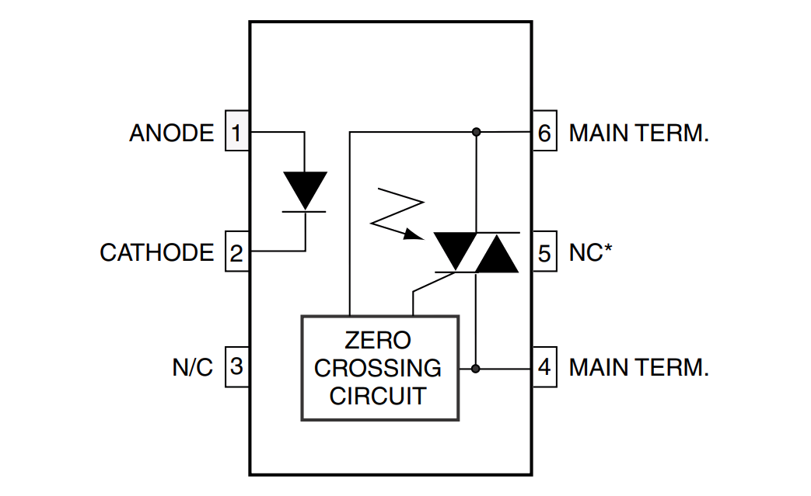
รูป: Optocoupler - Triac Driver Output with Zero-Crossing Detector
อุปกรณ์ที่ได้เลือกมาทดลองใช้งานคือ 1-Channel AC Dimmer Module ของบริษัท RobotDyn จากประเทศจีน และมีขาสำหรับการเชื่อมต่อดังนี้
- VCC แรงดันไฟเลี้ยง 3.3V หรือ 5V
- GND กราวนด์ของวงจร GND
- ZC (Zero-Crossing) เป็นสัญญาณดิจิทัล-เอาต์พุต มีลักษณะเป็นสัญญาณพัลส์
- PSM / DIM เป็นสัญญาณดิจิทัล-อินพุต มีลักษณะเป็นพัลส์กระตุ้นเพื่อให้ไตรแอกทำงานและจ่ายกระแสให้โหลดไฟฟ้าได้
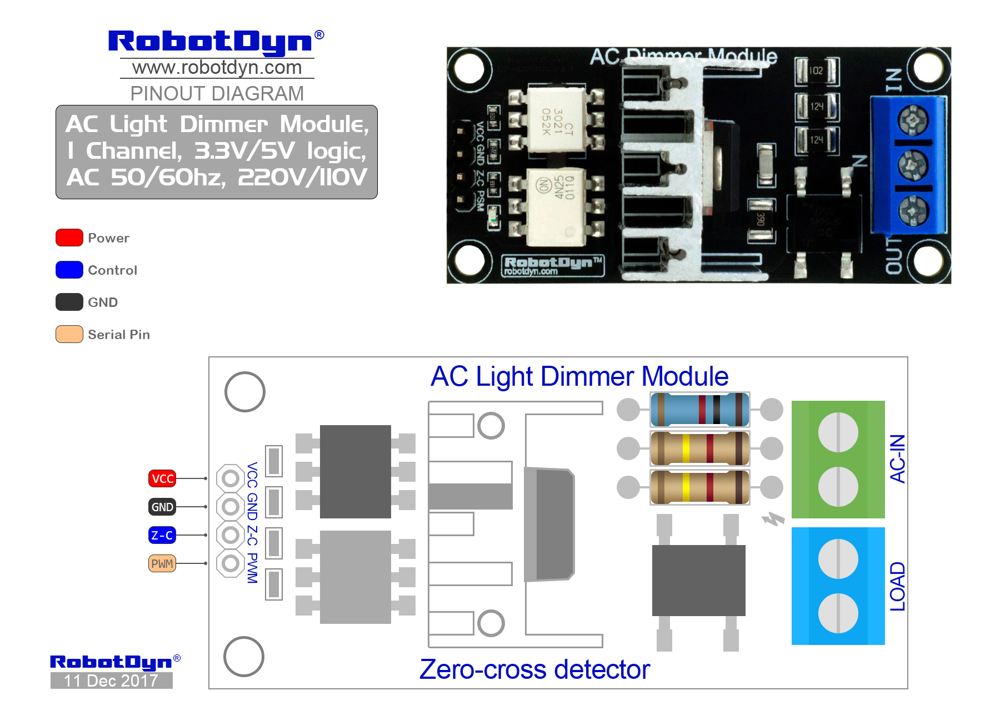
รูป: โมดูล RobotDyn 1-Channel AC Dimmer Module
จากรูปจะเห็นได้ว่า มีการใช้ไอซี MOC3021 Opto-Triac Driver ไอซี 4N25 Optocoupler ไอซี Full-wave Bridge Rectifier และไอซี Triac
การต่อใช้งานโมดูลสำหรับไฟฟ้า AC ในภาคอินพุต มีดังนี้
- การป้อนไฟฟ้า AC เป็นอินพุต: ให้ต่อสายไฟ L และ N จากปลั๊กไฟ เข้าที่ตำแหน่ง IN และ N ของ Terminal Block
- การป้อนไฟฟ้า AC ให้กับโหลด: ให้ต่อสายไฟ L และ N จากตำแหน่ง OUT และ N ของ Terminal Block ไปยังหลอดไฟ
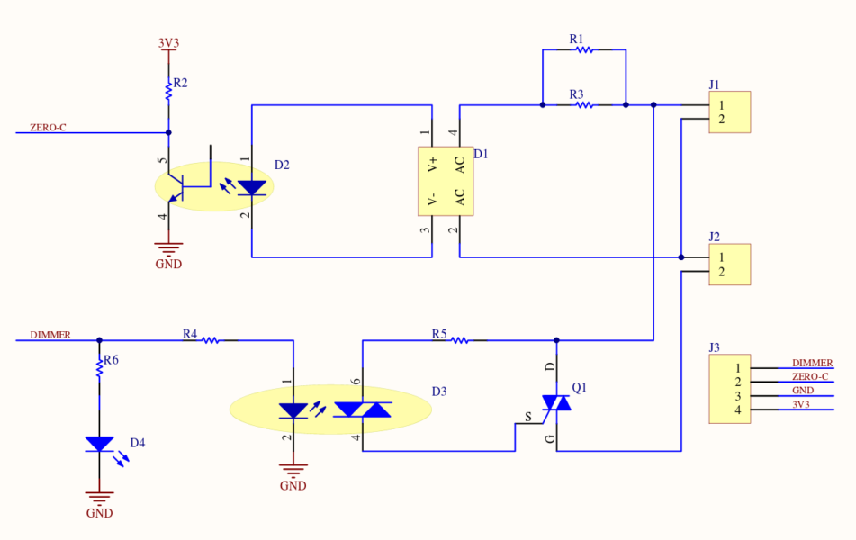
รูป: ตัวอย่างผังวงจร
การเปิดหรือปิดการจ่ายกำลังไฟฟ้าให้โหลดไฟฟ้ากระแสสลับ โดยใช้วงจรไตรแอก โดยปรกติแล้ว จะเกิดขึ้นในขณะที่เกิดเหตุการณ์ที่เรียกว่า Zero-Crossing ซึ่งจะเกิดขึ้นทุก ๆ 10 มิลลิวินาที สำหรับระบบไฟฟ้า AC ที่มีความถี่ 50Hz แต่ถ้าต้องการปรับการจ่ายกำลังไฟฟ้าให้น้อยลง ก็ให้หน่วงเวลาไว้ก่อนกระตุ้นให้ไตรแอกทำงาน ยิ่งหน่วงเวลามากขึ้น ก็จะทำให้โหลดไฟฟ้าได้กำลังไฟฟ้าน้อยลงต่อหนึ่งรอบไซเคิล
โมดูล AC Dimmer ใช้ 4N25 Optocoupler ทำหน้าที่ตรวจสอบว่า แรงดันไฟฟ้า AC Input ซึ่งถูกเรียงกระแสให้ไหลในทิศทางเดียวแล้ว มีระดับแรงดันใกล้เคียง 0V หรือไม่ ช่วงเวลาสั้น ๆ ดังกล่าว จะให้สัญญาณเอาต์พุตเป็นพัลส์ HIGH และใช้เป็นสัญญาณเอาต์พุต ZC (Zero-Crossing)
รูปต่อไปนี้เป็นตัวอย่างคลื่นสัญญาณ AC Input 220Vrms / 50Hz และคลื่นสัญญาณที่ถูกควบคุมด้วยวงจร AC Dimmer ซึ่งจะเห็นได้ว่า สัญญาณเอาต์พุตจะไม่เป็นรูปไซน์ เนื่องจากบางช่วงเวลาของหนึ่งไซเคิล จะมีแรงดันไฟฟ้าเป็น 0V ช่วงที่มีแรงดันไฟฟ้าเท่ากับหรือใกล้เคียง 0V นี้ เป็นช่วงที่โหลดไฟฟ้าถูกปิดการจ่ายกำลังไฟฟ้า
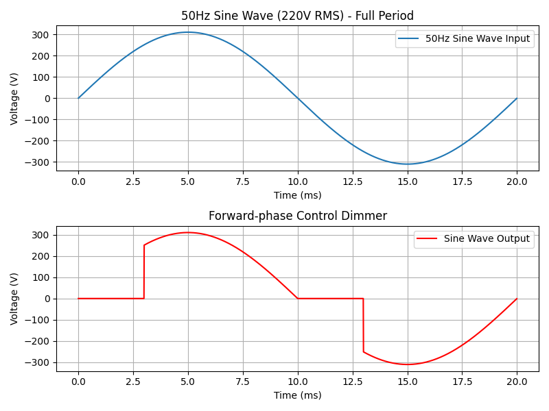
รูป: การควบคุมการจ่ายไฟให้โหลดไฟฟ้าด้วย AC Dimmer (Leading-Edge Traic Dimming)
โค้ด Python ต่อไปนี้ ใช้สำหรับการวาดรูปกราฟคลื่นสัญญาณเป็นตัวอย่าง และช่วยให้เข้าใจหลักการทำงานของวงจร AC Dimmer
import numpy as np
import matplotlib.pyplot as plt
# Constants
f = 50 # Frequency in Hz
Vrms = 220 # RMS Voltage in Volts
Vpeak = Vrms * np.sqrt(2) # Peak Voltage
T = 1 / f # Period of the sine wave
sample_rate = 1e5 # Sampling rate
# time steps for signal sampling between 0 to T (one period)
ts = np.linspace(0, T, int(sample_rate * T), endpoint=False)
# Generate samples for the sine wave for one period
sine_wave = Vpeak * np.sin(2 * np.pi * f * ts)
# Sine wave with first n% set to 0V
n = len(ts)
phase_start = 15 # phase in percentage
[t0,t1,t2] = (n * np.array([phase_start,50,50+phase_start])/ 100).astype(int)
sine_wave_modified = sine_wave.copy()
sine_wave_modified[0:t0] = 0
sine_wave_modified[t1:t2] = 0
# Plotting
fig, (ax1, ax2) = plt.subplots(2, 1, figsize=(8, 6))
# First figure: Full sine wave
ax1.plot(ts * 1000, sine_wave, label='50Hz Sine Wave Input')
ax1.set_title('50Hz Sine Wave (220V RMS) - Full Period')
ax1.set_xlabel('Time (ms)')
ax1.set_ylabel('Voltage (V)')
ax1.grid(True)
ax1.legend()
# Second figure: Sine wave with first n% set to 0V
ax2.plot(ts * 1000, sine_wave_modified, label=f'Sine Wave Output', color='r')
ax2.set_title( 'Forward-phase Control Dimmer')
ax2.set_xlabel('Time (ms)')
ax2.set_ylabel('Voltage (V)')
ax2.grid(True)
ax2.legend()
plt.tight_layout()
plt.show()
▷ การสร้างวงจรดิจิทัลควบคุมการทำงานของโมดูล AC Dimmer#
โดยปรกติแล้ว ในการควบคุมการทำงานของโมดูล AC Dimmer ก็นิยมใช้บอร์ดไมโครคอนโทรลเลอร์ เขียนโปรแกรมด้วยภาษา C/C++ เป็นต้น แต่ในบทความนี้ ลองมาดูตัวอย่างการเขียนโค้ด VHDL เพื่อนำไปสร้างเป็นวงจรดิจิทัลสำหรับ FPGA และนำไปทดสอบกับบอร์ด Terasic DE10-Lite FPGA
ในการออกแบบวงจร ได้เลือกใช้โมดูล Rotary Encoder Switch
ซึ่งจะให้สัญญาณดิจิทัล SW_A กับ SW_B เป็นสัญญาณพัลส์ (บางโมดูลอาจใช้ชื่อสัญญาณเป็น S1 และ S2
หรือ CLK และ DT เป็นต้น)
ถ้าไม่มีการหมุนหรือเปลี่ยนตำแหน่งเชิงมุม สัญญาณทั้งสอง จะมีค่าลอจิกเป็น HIGH
หากหมุนในทิศทางทวนหรือตามเข็มนาฬิกา จะทำให้มีการเปลี่ยนค่าลอจิกเกิดขึ้นทั้งสองสัญญาณ
(Logic Level Transition) แต่เกิดขึ้นไม่พร้อมกัน
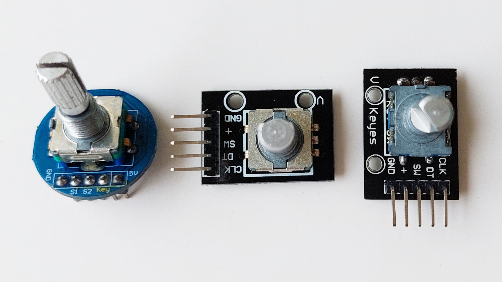
รูป: ตัวอย่างโมดูล Rotary Encoder Switch
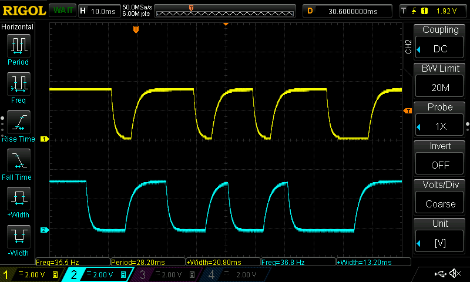
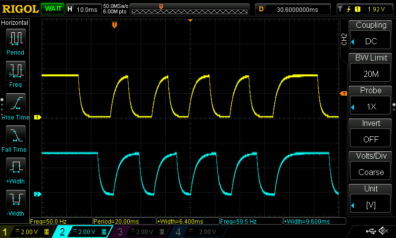
รูป: ตัวอย่างรูปคลื่นสัญญาณจากโมดูล Rotary Encoder Switch เมื่อมีการหมุนในทิศทางที่แตกต่างกัน
ในตัวอย่างนี้ การหมุนปุ่มดังกล่าว จะใช้สำหรับการปรับลดหรือเพิ่มการหน่วงเวลาของสัญญาณกระตุ้น PSM / DIM
ให้ไอซีไตรแอก หลังจากเกิดสัญญาณพัลส์ ZC ในแต่ละรอบ (เกิดขึ้นทุก ๆ 10 มิลลิวินาที หรือ 100Hz)
วงจรดิจิทัลใช้สัญญาณ CLK ความถี่ 50MHz ของวงจรบนบอร์ด FPGA สำหรับกำหนดจังหวะการทำงานของวงจรดิจิทัล
และมีสัญญาณอินพุต nRST สำหรับรีเซตการทำงานของวงจร (Active-Low Asynchronous Reset)
วงจรจะทำหน้าที่คอยตรวจสอบการเปลี่ยนแปลงของสัญญาณ SW_A กับ SW_B
และดูว่า มีการหมุนไปในทิศทางใด เพื่อนำมาเพิ่มหรือลดค่าของตัวนับ set_delay_cnt
ซึ่งจะถูกนำไปใช้ในการหน่วงเวลาสำหรับสัญญาณพัลส์ PSM / DIM
การตรวจสอบสัญญาณอินพุต และอัปเดตค่าตัวนับ จะเกิดขึ้นด้วยอัตราคงที่ (เช่น 500Hz)
File: de10_lite_ac_dimmer.vhd
----------------------------------------------------------------------------
-- Date: 2024-09-10
-- Target Board: Terasic DE10 Lite FPGA Board
-- Purpose: Demonstrate AC dimming for a light bulb
----------------------------------------------------------------------------
LIBRARY ieee;
USE ieee.std_logic_1164.ALL;
USE ieee.numeric_std.ALL;
USE IEEE.math_real.ALL;
ENTITY de10_lite_ac_dimmer IS
GENERIC (
CLK_HZ : NATURAL := 50000000
);
PORT (
CLK : IN STD_LOGIC; -- system clock input (50MHz)
nRST : IN STD_LOGIC; -- active-low asynchronous reset input
SW_A : IN STD_LOGIC; -- digital input for rotary encoder switch A
SW_B : IN STD_LOGIC; -- digital input for rotary encoder switch B
ZC : IN STD_LOGIC; -- digital input for zero crossing pulse
PSM : OUT STD_LOGIC -- digital output for triac trigger pulse
);
END de10_lite_ac_dimmer;
ARCHITECTURE behave OF de10_lite_ac_dimmer IS
TYPE state_type IS (ST_IDLE, ST_DELAY, ST_PULSE_START, ST_PULSE_HIGH);
SIGNAL state : state_type := ST_IDLE;
SIGNAL pulse_out : STD_LOGIC;
SIGNAL pulse_in : STD_LOGIC;
SIGNAL pulse_in_prev : STD_LOGIC;
SIGNAL pulse_detected : STD_LOGIC := '0';
CONSTANT UPDATE_CNT_MAX : INTEGER := (CLK_HZ/500) - 1;
SIGNAL sw_capture : STD_LOGIC_VECTOR(3 DOWNTO 0) := (OTHERS => '1');
SIGNAL update_enable : STD_LOGIC := '0';
SIGNAL change_detected : STD_LOGIC := '0';
SIGNAL delay_cnt_inc : STD_LOGIC := '0';
SIGNAL delay_cnt_dec : STD_LOGIC := '0';
CONSTANT DELAY_CNT_MAX : INTEGER := (CLK_HZ/100) * 90 / 100 - 1;
CONSTANT BW : INTEGER := INTEGER(ceil(log2(real(DELAY_CNT_MAX))));
SIGNAL set_delay_cnt : INTEGER RANGE 0 TO (2 ** BW - 1) := 0;
SIGNAL delay_cnt : unsigned(19 DOWNTO 0) := (OTHERS => '0');
CONSTANT PULSE_WIDTH_CNT_MAX : unsigned(15 DOWNTO 0)
:= to_unsigned(20000, 16);
SIGNAL pulse_width_cnt : unsigned(15 DOWNTO 0) := (OTHERS => '0');
BEGIN
-- This process implements switch debouncing logic.
P1 : PROCESS (nRST, CLK)
VARIABLE update_cnt : INTEGER RANGE 0 TO UPDATE_CNT_MAX := 0;
BEGIN
IF nRST = '0' THEN
update_cnt := 0;
sw_capture <= (OTHERS => '1');
update_enable <= '0';
ELSIF rising_edge(CLK) THEN
IF update_cnt = UPDATE_CNT_MAX THEN
update_cnt := 0;
update_enable <= '1';
sw_capture <= sw_capture(1 DOWNTO 0) & (SW_A & SW_B);
ELSE
update_cnt := update_cnt + 1;
update_enable <= '0';
END IF;
END IF;
END PROCESS;
-- Detect the falling edge on the captured SW_A signal.
change_detected <= sw_capture(3) AND (NOT sw_capture(1));
delay_cnt_inc <= change_detected AND (NOT sw_capture(0)); -- Increment
delay_cnt_dec <= change_detected AND sw_capture(0); -- Decrement
P2 : PROCESS (nRST, CLK)
BEGIN
IF nRST = '0' THEN
set_delay_cnt <= 20000;
ELSIF rising_edge(CLK) THEN
IF update_enable = '1' THEN
IF delay_cnt_inc = '1' THEN
IF set_delay_cnt <= DELAY_CNT_MAX THEN
set_delay_cnt <= set_delay_cnt + 2000;
END IF;
ELSIF delay_cnt_dec = '1' THEN
IF set_delay_cnt > 20000 THEN
set_delay_cnt <= set_delay_cnt - 2000;
END IF;
END IF;
ELSIF set_delay_cnt < 20000 THEN
set_delay_cnt <= 20000;
END IF;
END IF;
END PROCESS;
P3 : PROCESS (CLK, nRST)
BEGIN
IF nRST = '0' THEN
state <= ST_IDLE;
pulse_in_prev <= '0';
pulse_out <= '0';
delay_cnt <= (OTHERS => '0');
pulse_width_cnt <= (OTHERS => '0');
ELSIF rising_edge(CLK) THEN
pulse_in_prev <= pulse_in;
pulse_in <= ZC; -- Capture the zero-crossing (ZC) pulse
CASE state IS
WHEN ST_IDLE =>
pulse_out <= '0';
delay_cnt <= (OTHERS => '0');
pulse_width_cnt <= (OTHERS => '0');
-- Detect the rising edge of the ZC pulse
IF pulse_in = '1' AND pulse_in_prev = '0' THEN
state <= ST_DELAY;
END IF;
WHEN ST_DELAY =>
IF delay_cnt < to_unsigned(set_delay_cnt, BW) THEN
delay_cnt <= delay_cnt + 1;
ELSE
state <= ST_PULSE_START;
END IF;
WHEN ST_PULSE_START =>
pulse_out <= '1';
state <= ST_PULSE_HIGH;
WHEN ST_PULSE_HIGH =>
IF pulse_width_cnt < PULSE_WIDTH_CNT_MAX THEN
pulse_width_cnt <= pulse_width_cnt + 1;
ELSE
pulse_out <= '0';
state <= ST_IDLE;
END IF;
WHEN OTHERS =>
state <= ST_IDLE;
END CASE;
END IF;
END PROCESS;
PSM <= pulse_out;
END behave;
ตัวอย่างไฟล์ Tcl Script สำหรับเลือกใช้ขาชิป 10M50DAF4847CG FPGA สำหรับสัญญาณ I/O มีดังนี้
# Pin & Location Assignments
# ==========================
set_location_assignment PIN_P11 -to CLK
set_location_assignment PIN_B8 -to nRST
# GPIO18
set_location_assignment PIN_AB11 -to PSM
# GPIO20
set_location_assignment PIN_AB10 -to ZC
# GPIO22
set_location_assignment PIN_AA9 -to SW_A
# GPIO24
set_location_assignment PIN_AA8 -to SW_B
set_instance_assignment -name IO_STANDARD "3.3-V LVTTL" -to CLK
set_instance_assignment -name IO_STANDARD "3.3-V LVTTL" -to nRST
set_instance_assignment -name IO_STANDARD "3.3-V LVTTL" -to ZC
set_instance_assignment -name IO_STANDARD "3.3-V LVTTL" -to PSM
set_instance_assignment -name IO_STANDARD "3.3-V LVTTL" -to SW_A
set_instance_assignment -name IO_STANDARD "3.3-V LVTTL" -to SW_B
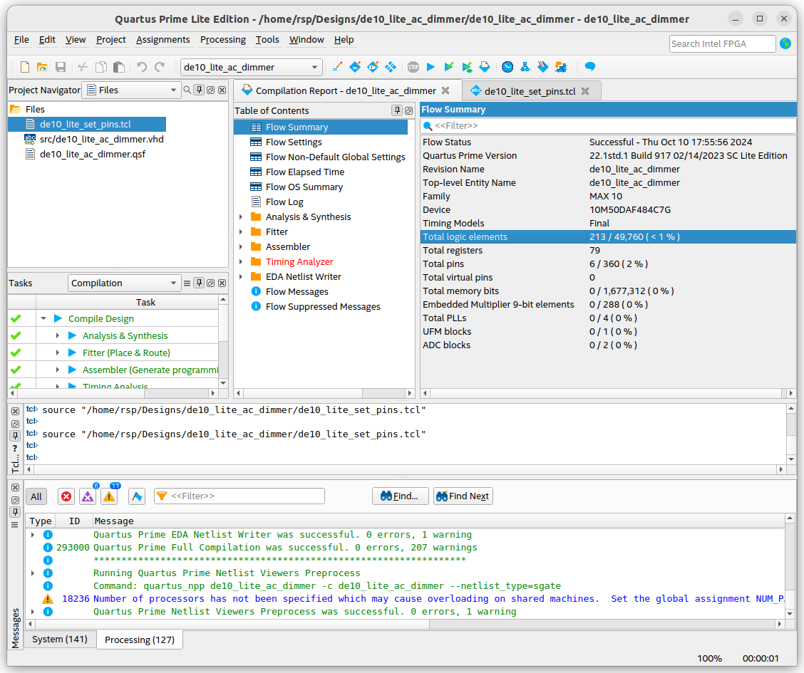
รูป: การใช้ซอฟต์แวร์ Intel Quartus Prime Lite Edition v22.1 (Ubuntu) ในการแปลงโค้ด VHDL ให้เป็นไฟล์ Bitstream เพื่อนำไปทดลองใช้กับบอร์ด FPGA
▷ การทดลองกับอุปกรณ์ฮาร์ดแวร์#
เมื่อได้ออกแบบวงจรดิจิทัลได้สำเร็จแล้ว ถัดไปเป็นการทดสอบการทำงานกับอุปกรณ์จริง
คำเตือน: การทดลองที่มีการใช้ไฟฟ้า AC จะต้องทำด้วยความระมัดระวัง เพื่อมิให้เกิดอันตรายต่อชีวิต หรือความเสียหายต่อวงจร หากต่อวงจรไม่ถูกต้อง
คำแนะนำ: ก่อนทดลองใช้บอร์ด FPGA เชื่อมต่อกับโมดูล AC Dimmer ในเบื้องต้นยังไม่ต้องใช้โมดูลหรี่ไฟ และให้ใช้ Function Generator มาสร้างสัญญาณพัลส์ให้กับบอร์ด FPGA โดยสร้างสัญญาณ ZC ซึ่งเป็นสัญญาณรายคาบ ตั้งค่าความถี่ 100 Hz แรงดันไฟฟ้าอยู่ระหว่าง 0V ถึง 3.3V ตั้งค่า Duty Cycle สำหรับสัญญาณพัลส์ (Pulse) เช่น ไม่เกิน 5% เพื่อดูการทำงานของวงจรดิจิทัล และใช้ออสซิลโลสโคปวัดสัญญาณ ZC และสัญญาณพัลส์ PSM / DIM ที่เป็นเอาต์พุตจากบอร์ด FPGA
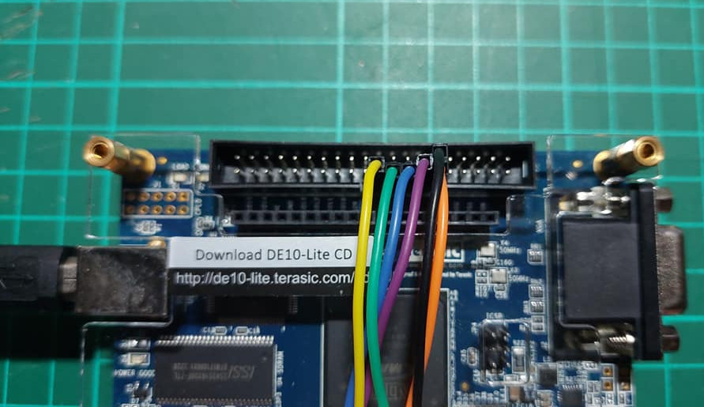
รูป: ตำแหน่งของขา I/O ของบอร์ด FPGA และไฟเลี้ยง 3.3V & GND สำหรับโมดูล AC Dimmer
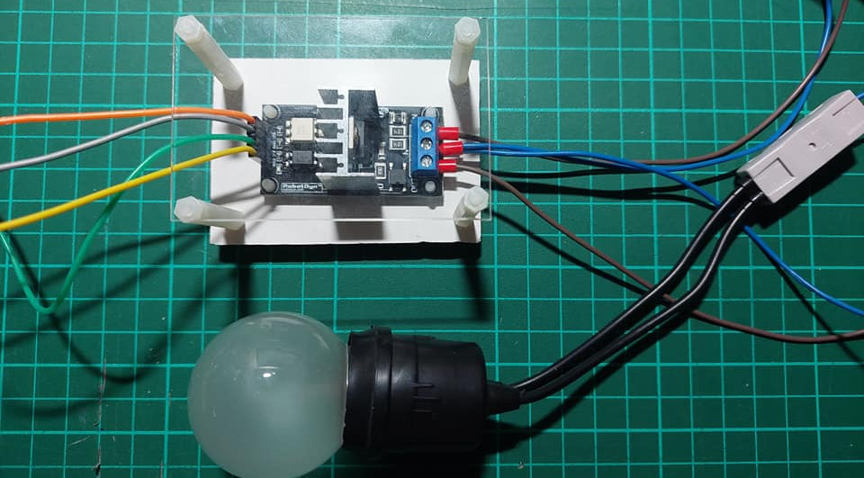
รูป: การเชื่อมต่อสายไฟ AC สำหรับจ่ายไฟ และโหลดไฟฟ้า (หลอดไฟ)
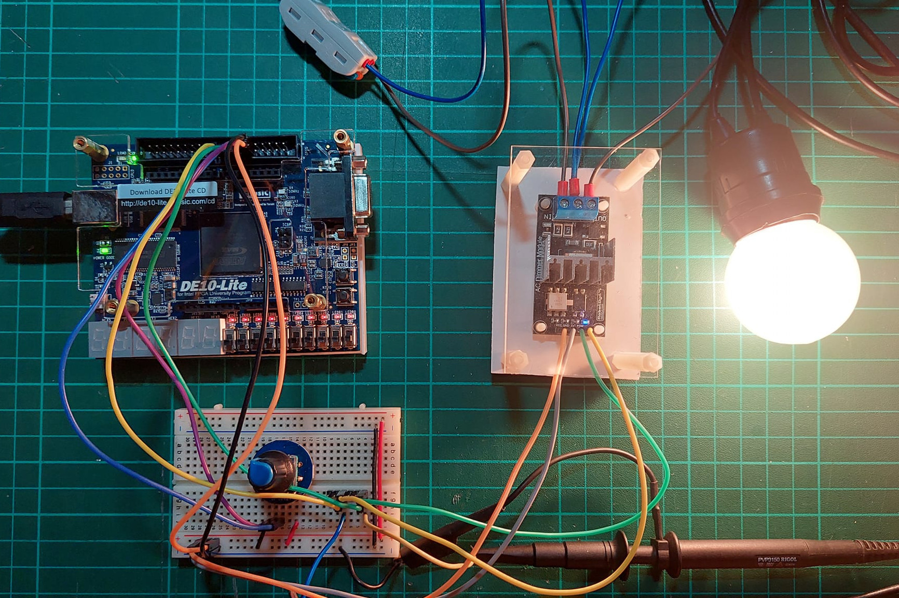
รูป: การปรับความสว่างสูงสุด
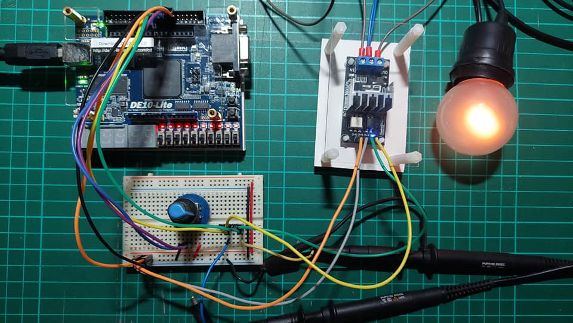
รูป: การปรับความสว่างลดลง
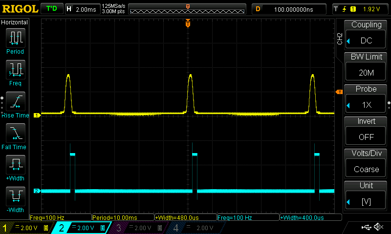
รูป: สัญญาณZC (CH1) และ PSM (CH2) เมื่อมีการหน่วงเวลาน้อยมาก หลังจากเกิดสัญญาณพัลส์ ZC แล้วตามด้วยการเกิดพัลส์ PSM ในกรณีนี้จะทำให้หลอดไฟสว่างสูงสุด
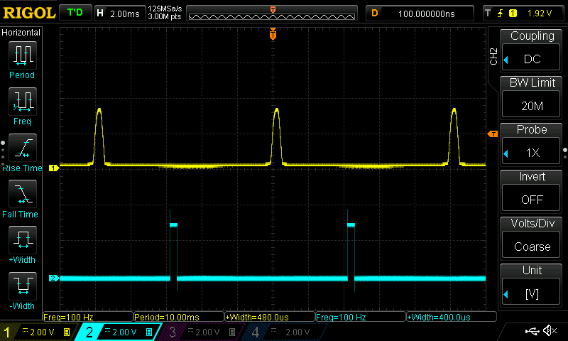
รูป: สัญญาณพัลส์ ZC และ PSM เมื่อมีการหน่วงเวลาปานกลาง ซึ่งจะทำให้หลอดไฟสว่างลดลง
รูป: สัญญาณพัลส์ ZC และ PSM เมื่อมีการหน่วงเวลามากสุด ซึ่งจะทำให้หลอดไฟไม่สว่าง
จากรูปสัญญาณตัวอย่าง จะเห็นได้ว่า มีการหน่วงเวลานับจากการเกิดสัญญาณพัลส์ ZC แล้วตามด้วยพัลส์ PSM ในแต่ละไซเคิล แต่การหน่วงเวลาจะต้องน้อยกว่า 10 มิลลิวินาที
▷ กล่าวสรุป#
บทความนี้ได้นำเสนอ ตัวอย่างการใช้งานโมดูล AC Dimmer และนำมาใช้เป็นโจทย์ฝึกการออกแบบวงจรดิจิทัลด้วยภาษา VHDL เพื่อนำไปใช้กับบอร์ด FPGA โดยเลือกใช้บอร์ด Terasic DE10-Lite FPGA (Intel MAX 10 FPGA) และสาธิตการทดลองใช้งานกับหลอดไฟแบบไส้เพื่อปรับความสว่างของหลอดไฟได้
This work is licensed under a Creative Commons Attribution-ShareAlike 4.0 International License.
Created: 2024-10-10 | Last Updated: 2024-10-12